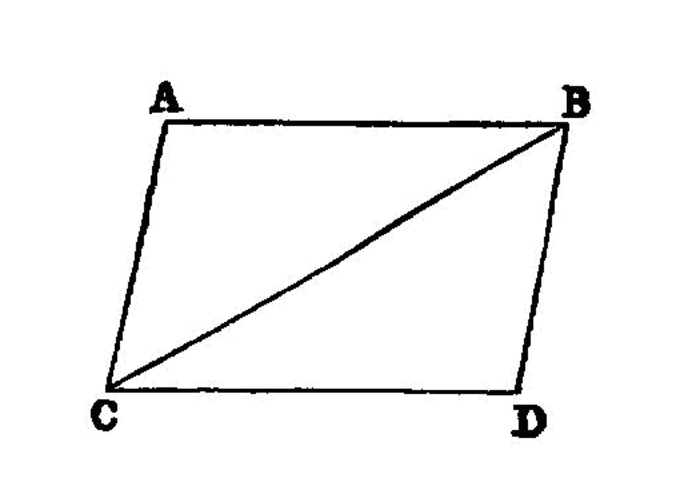

similar angles on parallels¶
I.33
The straight lines joining equal and parallel straight lines (at the extremities which are) in the same directions (respectively) [1] are themselves also equal and parallel.
—Euclid
{kind=link}
Let AB, CD be equal and parallel, and let the straight lines AC, BD join them (at the extremities which are) in the same directions (respectively); I say that AC, BD are also equal and parallel.
Let BC be joined.
Then, since AB is parallel to CD, and BC has fallen upon them,
the alternate angles ABC, BCD are equal to one another. [I.29]
And, since AB is equal to CD,
and BC is common, the two sides AB, BC are equal to the two sides DC, CB; [2] and the angle ABC is equal to the angle BCD; therefore the base AC is equal to the base BD, and the triangle ABC is equal to the triangle DCB, and the remaining angles will be equal to the remaining angles respectively, namely those which the equal sides subtend; [I.4] therefore the angle ACB is equal to the angle CBD.
And, since the straight line BC falling on the two straight lines AC, BD has made the alternate angles equal to one another,
AC is parallel to BD. [I.27]
And it was also proved equal to it.
Therefore etc.
references¶
[I.4]: /elem.1.4 “Book 1 - Proposition 4” [I.27]: /elem.1.27 “Book 1 - Proposition 27” [I.29]: /elem.1.29 “Book 1 - Proposition 29”